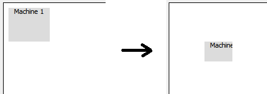

Создан виджет "Машина", и он просто перемещается по экрану:
void Machine::paintEvent(QPaintEvent*) {
QPainter painter(this);
QRect geo = this->geometry();
int x, y, width, height;
x = geo.x()-10;
y = geo.y()-10;
width = geo.width()-3;
height = geo.height()-5;
painter.fillRect(x, y, width, height, QColor(220,220,220));
painter.drawText(x+10, y+10, "Machine " + QString::number(id));
}
Здесь есть какая-то проблема с относительной системой координат:

В обсуждении этой проблемы рекомендуют воспользоваться следующим кодом:
void Machine::paintEvent(QPaintEvent*) {
QPainter painter(this);
int width = size().width() - 3;
int height = size().height() - 5;
painter.fillRect(0, 0, width, height, QColor(220,220,220));
painter.drawText(10, 10, "Machine " + QString::number(id));
}
В принципе, общий смысл переопределения события по отрисовки виджета понятен.